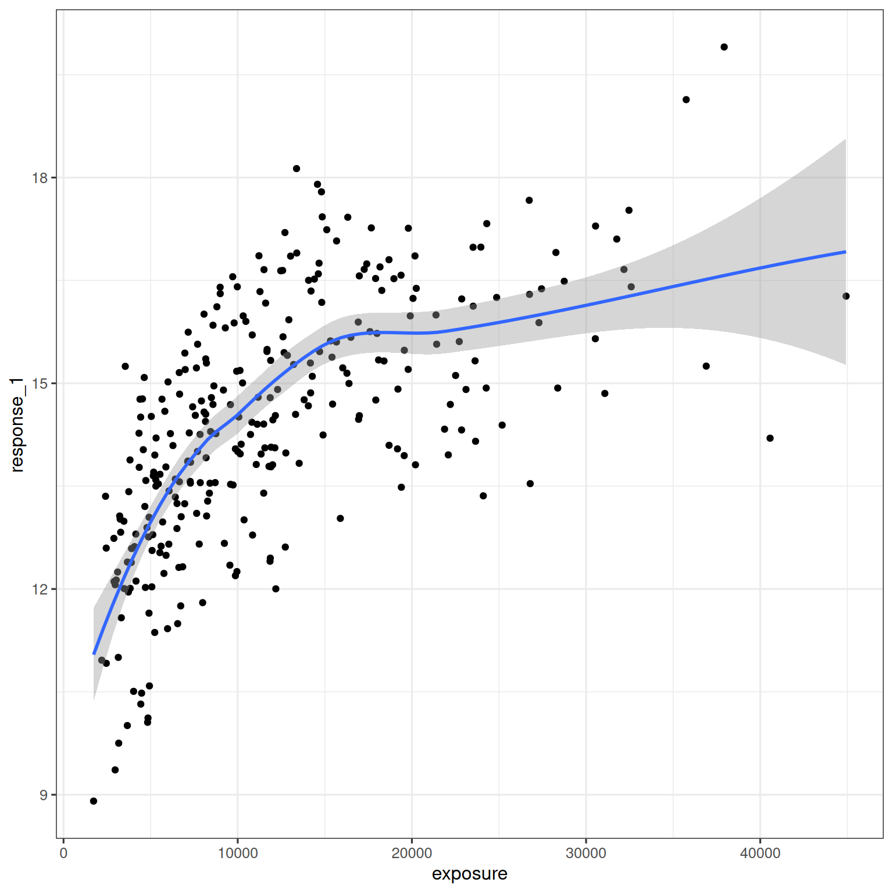
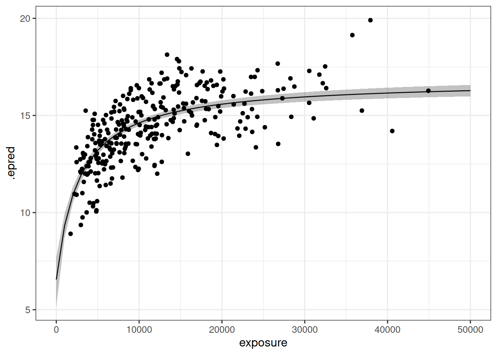
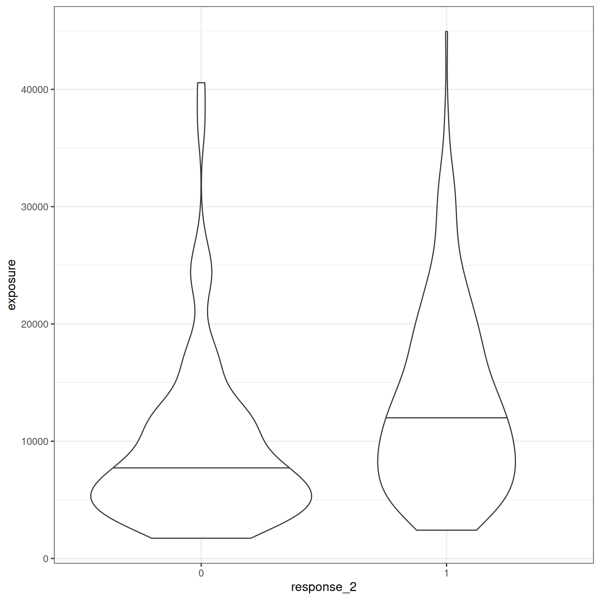
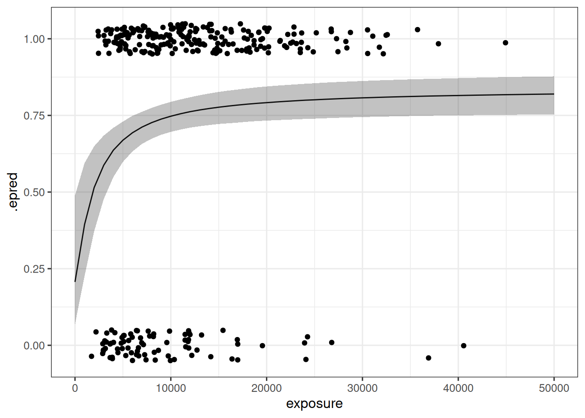

Show the code
library(tidyverse)
library(brms)
library(posterior)
library(tidybayes)
library(here)
library(BayesERtools)
theme_set(theme_bw(base_size = 12))The brms package provides a flexible framework for specifying multilevel regression models, using Stan as the back end. It is typically used for models within the generalized linear mixed model (GLMM) specification, but can accommodate nonlinear models such as Emax. This chapter uses the brms package to develop and evaluate Bayesian Emax regression models. Models for continuous and binary response data are discussed, and in the next chapter these are extended to discuss covariate modeling.
library(tidyverse)
library(brms)
library(posterior)
library(tidybayes)
library(here)
library(BayesERtools)
theme_set(theme_bw(base_size = 12))if (require(cmdstanr)) {
# prefer cmdstanr and cache binaries
options(
brms.backend = "cmdstanr",
cmdstanr_write_stan_file_dir = here("_brms-cache")
)
dir.create(here("_brms-cache"), FALSE)
} else {
rstan::rstan_options(auto_write = TRUE)
}Loading required package: cmdstanr
This is cmdstanr version 0.9.0
- CmdStanR documentation and vignettes: mc-stan.org/cmdstanr
- CmdStan path: /home/danielle/.cmdstan/cmdstan-2.36.0
- CmdStan version: 2.36.0
This section shows how to build a standard Emax model for continuous response data using brms. To build the model a simulated data set is used:
d_sim_emax# A tibble: 300 × 9
dose exposure response_1 response_2 cnt_a cnt_b cnt_c bin_d bin_e
In this chapter only the exposure, response_1, and response_2 columns are used. A simple exploratory visualization of the exposure-response relationship for the continuous outcome response_1 is shown below:
d_sim_emax |>
ggplot(aes(exposure, response_1)) +
geom_point() +
geom_smooth(formula = y ~ x, method = "loess")
The model considered in this section is a hyperbolic Emax model, in which the Hill coefficient is fixed to unity (i.e. gamma = 1). The model construction takes place in stages. First, use brmsformula() to describe the exposure-response relationship, setting nl = TRUE to ensure that brms interprets the input as a non-linear model:
hyperbolic_model <- brmsformula(
response_1 ~ e0 + emax * exposure / (ec50 + exposure),
e0 ~ 1,
emax ~ 1,
ec50 ~ 1,
nl = TRUE
) In this specification, the first formula indicates that the exposure-response relationship is an Emax function. The later formulas indicate that e0, emax, and ec50 are model parameters.
In the second stage, assumptions must also be specified for the distribution of measurement errors. For simplicity, this example assumes errors are normally distributed. Use the brmsfamily() function to specify this:
gaussian_measurement <- brmsfamily(
family = "gaussian",
link = "identity"
)In the third stage, parameter priors for e0, emax, and ec50 must also be specified. In brms the default is to place an improper flat prior on regression parameters. For this example a weakly-informative prior is used. The prior() function is used for this, using the nlpar argument to specify the name of a non-linear parameter, and using lb and ub to impose lower and upper bounds if required:
hyperbolic_model_prior <- c(
prior(normal(0, 1.5), nlpar = "e0"),
prior(normal(0, 1.5), nlpar = "emax"),
prior(normal(2000, 500), nlpar = "ec50", lb = 0)
)These three components provide the complete specification of the model. They are passed to brm() along with the data to estimate model parameters:
hyperbolic_model_fit <- brm(
formula = hyperbolic_model,
family = gaussian_measurement,
data = d_sim_emax,
prior = hyperbolic_model_prior
) When this code is executed a Stan model is compiled and run, and detailed information on the sampling is printed during the run.
After the sampling is complete the user can inspect the brms model object to obtain a summary of the model, the sampling, and the parameter estimates:
hyperbolic_model_fit Family: gaussian
Links: mu = identity; sigma = identity
Formula: response_1 ~ e0 + emax * exposure/(ec50 + exposure)
e0 ~ 1
emax ~ 1
ec50 ~ 1
Data: d_sim_emax (Number of observations: 300)
Draws: 4 chains, each with iter = 2000; warmup = 1000; thin = 1;
total post-warmup draws = 4000
Regression Coefficients:
Estimate Est.Error l-95% CI u-95% CI Rhat Bulk_ESS Tail_ESS
e0_Intercept 6.52 0.66 5.18 7.71 1.00 1151 1569
emax_Intercept 10.28 0.67 9.03 11.62 1.00 1269 1685
ec50_Intercept 2718.78 333.34 2111.88 3388.11 1.00 1423 1769
Further Distributional Parameters:
Estimate Est.Error l-95% CI u-95% CI Rhat Bulk_ESS Tail_ESS
sigma 1.28 0.05 1.18 1.38 1.00 1978 1768
Draws were sampled using sample(hmc). For each parameter, Bulk_ESS
and Tail_ESS are effective sample size measures, and Rhat is the potential
scale reduction factor on split chains (at convergence, Rhat = 1).
The data can be visualized in many different ways. A simple example is shown below, using epred_draws() from tidybayes package to extract model predictions as a function of exposure, and median_qi() to calculate a 95% interval around the model predictions:
hyperbolic_model_fit |>
epred_draws(newdata = tibble(exposure = seq(0, 50000, 1000))) |>
median_qi() |>
ggplot(mapping = aes(exposure, .epred)) +
geom_path() +
geom_ribbon(aes(ymin = .lower, ymax = .upper), alpha = 0.3) +
geom_point(data = d_sim_emax, mapping = aes(y = response_1))
It is often necessary to consider sigmoidal Emax models, in which the Hill coefficient gamma is estimated from data. To do so within in the brms framework, the first step is to incorporate the gamma parameter in the model specification:
sigmoidal_model <- brmsformula(
response_1 ~ e0 + emax * exposure^gamma / (ec50^gamma + exposure^gamma),
e0 ~ 1,
emax ~ 1,
ec50 ~ 1,
gamma ~ 1,
nl = TRUE
) Next, because gamma is now a model parameter, a prior for it must be specified. The prior specification may now look like this:
sigmoidal_model_prior <- c(
prior(normal(0, 1.5), nlpar = "e0"),
prior(normal(0, 1.5), nlpar = "emax"),
prior(normal(2000, 500), nlpar = "ec50", lb = 0),
prior(lognormal(0, 0.25), nlpar = "gamma", lb = 0)
)No changes to the measurement model are required: like the hyperbolic Emax model, it is typical to fit the sigmoidal Emax model to continuous responses by assuming measurement errors are described by independent normal variates.
To fit the model, call brm():
sigmoidal_model_fit <- brm(
formula = sigmoidal_model,
family = gaussian_measurement,
data = d_sim_emax,
prior = sigmoidal_model_prior
) Once the sampling is complete, printing the model object displays estimated model parameters, 95% credible intervals for those parameters, and diagnostic information about the sampling:
sigmoidal_model_fit Family: gaussian
Links: mu = identity; sigma = identity
Formula: response_1 ~ e0 + emax * exposure^gamma/(ec50^gamma + exposure^gamma)
e0 ~ 1
emax ~ 1
ec50 ~ 1
gamma ~ 1
Data: d_sim_emax (Number of observations: 300)
Draws: 4 chains, each with iter = 2000; warmup = 1000; thin = 1;
total post-warmup draws = 4000
Regression Coefficients:
Estimate Est.Error l-95% CI u-95% CI Rhat Bulk_ESS Tail_ESS
e0_Intercept 6.78 0.70 5.38 8.10 1.00 1160 1679
emax_Intercept 9.68 0.81 8.11 11.27 1.00 1182 1708
ec50_Intercept 2837.61 332.93 2224.37 3522.70 1.00 1362 1682
gamma_Intercept 1.18 0.14 0.93 1.47 1.00 1967 2204
Further Distributional Parameters:
Estimate Est.Error l-95% CI u-95% CI Rhat Bulk_ESS Tail_ESS
sigma 1.28 0.05 1.18 1.39 1.00 2230 2303
Draws were sampled using sample(hmc). For each parameter, Bulk_ESS
and Tail_ESS are effective sample size measures, and Rhat is the potential
scale reduction factor on split chains (at convergence, Rhat = 1).
In this instance it is clear from inspection that a sigmoidal model is unnecessary: the posterior mean for gamma is 1.18 with 95% credible interval from 0.93 to 1.47. A hyperbolic model is the more natural choice here. If explicit model comparison is required, cross-validation methods such as LOO-CV can be used to compare the performance of different brms models estimated from the same data. This is discussed in the next chapter.
Now consider the case where the response is binary. Again, the imulated data set d_sim_emax is used. For this analysis the response_2 variable is used, a binary outcome that is 0 or 1 for each subject:
d_sim_emax# A tibble: 300 × 9
dose exposure response_1 response_2 cnt_a cnt_b cnt_c bin_d bin_e
The exposure-response relationship is illustrated by plotting the difference in exposure between responders and non-responders:
d_sim_emax |>
mutate(response_2 = factor(response_2)) |>
ggplot(aes(response_2, exposure)) +
geom_violin(draw_quantiles = .5)
To adapt the brms model to be appropriate for binary responses, the measurement model is adjusted. As in logistic regression, binary responses are assumed to be Bernoulli distributed, with a logit link function:
bernoulli_measurement <- brmsfamily(
family = "bernoulli",
link = "logit"
)This is the only respect in which the binary model differs from its continuous counterpart. The model formula and prior specification is the same as for the original model at the start of the chapter.
Note that as the modeling is perfomed on logit scale, normal(0, 1.5) priors are considered as a good starting point for e0 and emax. There is a good discussion of these priors on the Stan website.
binary_model <- brmsformula(
response_2 ~ e0 + emax * exposure / (ec50 + exposure),
e0 ~ 1,
emax ~ 1,
ec50 ~ 1,
nl = TRUE
)
binary_model_prior <- c(
prior(normal(0, 1.5), nlpar = "e0"),
prior(normal(0, 1.5), nlpar = "emax"),
prior(normal(2000, 500), nlpar = "ec50", lb = 0)
)To estimate parameters, call brm() for the binary data set using the bernoulli_measurement family:
binary_base_fit <- brm(
formula = binary_model,
family = bernoulli_measurement,
data = d_sim_emax,
prior = binary_model_prior
) Again, inspect the model fit object to see the results:
binary_base_fit Family: bernoulli
Links: mu = logit
Formula: response_2 ~ e0 + emax * exposure/(ec50 + exposure)
e0 ~ 1
emax ~ 1
ec50 ~ 1
Data: d_sim_emax (Number of observations: 300)
Draws: 4 chains, each with iter = 2000; warmup = 1000; thin = 1;
total post-warmup draws = 4000
Regression Coefficients:
Estimate Est.Error l-95% CI u-95% CI Rhat Bulk_ESS Tail_ESS
e0_Intercept -1.35 0.66 -2.61 -0.05 1.00 1213 1330
emax_Intercept 3.00 0.83 1.39 4.64 1.00 1259 1355
ec50_Intercept 2345.03 449.28 1449.56 3214.10 1.00 1632 1499
Draws were sampled using sample(hmc). For each parameter, Bulk_ESS
and Tail_ESS are effective sample size measures, and Rhat is the potential
scale reduction factor on split chains (at convergence, Rhat = 1).
The predictions of the fitted model are visualized below:
binary_base_fit |>
epred_draws(newdata = tibble(exposure = seq(0, 50000, 1000))) |>
median_qi() |>
ggplot(mapping = aes(exposure, .epred)) +
geom_path() +
geom_ribbon(
mapping = aes(ymin = .lower, ymax = .upper),
alpha = 0.3
) +
geom_jitter(
data = d_sim_emax,
mapping = aes(y = response_2),
width = 0,
height = .05
)